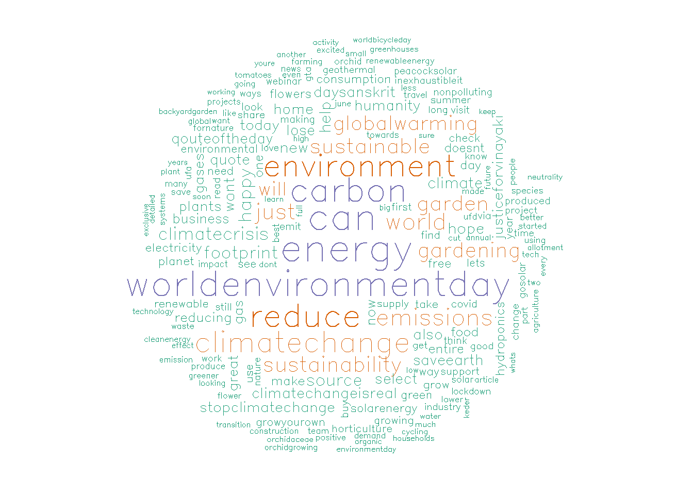

1 Emotions In Online Customer Reviews

Figure 1.1: Foto von Andrea Piacquadio von Pexels
Consumers usually seek quality and relevant information when buying new products. With the expansion and availability of the Internet, online consumer reviews have become a valuable resource to look at. Several studies tried to demystify relationship between product sales and online customer reviews. On the one hand, some of them, such as Senecal and Nantel (2004), suggest that participants who consulted product recommendations selected these products twice as often as those who did not consult recommendations. On the other hand, Zhang and Dellarocas (2006) find that online reviews and do not influence sales and serve solely as prediction.
Between these two opinion fronts, one thing is certain: both sides aim to find out how consumers perceive and process word-of-mouth in a digital environment. In the academic paper The Role of Emotions for the Perceived Usefulness in Online Customer Reviews authors suggests that emotions impact the helpfulness ratings, i.e., the quality of online reviews as perceived by other customers. They found that, on average, the most prominent emotion dimensions that influence helpfulness ratings are trust, joy, and anticipation. Inspired by these findings, I decided to apply natural language processing techniques to analyze online customer reviews of a bestselling product on Amazon and try to detect those emotions using available lexicons. Final insights will show us whether trust, joy and anticipation can be identified in the reviews, thus improve helpfulness of reviews for potential customers.
What to expect in this article?
First, I will extract text via web-scrapping and form a corpus. Next, the text in the corpus will be pre-processed. Subsequently, from the pre-processed text will be stored in form of document-term-matrices or term-document matrices. Finally, an exploratory text analysis will be conducted and corresponding marketing implications pointed out.
1.1 Dictionaries for NLP
For this exercise I will use 3 different lexicons available for R. One of them is AFINN, a lexicon of words rated for valence between minus five (indicating negative valence) and plus five (indicating positive valence). Next, I will use NRC Emotion Lexicon, which consists of English words and their labels for eight basic emotions (anger, fear, anticipation, trust, surprise, sadness, joy, and disgust) and two sentiments (negative and positive).
1.2 Data set
For our analysis, we will use text of 200 online customer reviews from Apple MacBook Pro (16-inch, 16GB RAM, 512GB Storage, 2.6GHz Intel Core i7) obtained in unpre-processed form:
## [1] "\n\n\n\n\n\n\n\n\n\n \n \n \n Great product. Replacement for my other macbook that lasted 7 years and was still going strong besides the battery. Great upgrade\n\n \n"
## [2] "\n\n\n\n\n\n\n\n\n\n \n \n \n Top notch until you don't use external monitor as well. Its common issue\n\n \n"
## [3] "\n\n\n\n\n\n\n\n\n\n \n \n \n This is my first Mac and I love it. Apple is the BEST!\n\n \n"
## [4] "\n\n\n\n\n\n\n\n\n\n \n \n \n Basically, the laptop is a work of art. You know exactly what youre buying with an Apple product. I love that it comes with 16 GB of memory as default. The video card is very powerful. The touchpad is huge and works flawlessly. It is expensive, but worth every penny.\n\n \n"
## [5] "\n\n\n\n\n\n\n\n\n\n \n \n A los dos dias de usarlo la pantalla se puso a rayas\n\n \n \n"
## [6] "\n\n\n\n\n\n\n\n\n\n \n \n \n Product too heavy. Returned and have not received refund.\n\n \n"
## [7] "\n\n\n\n\n\n\n\n\n\n \n \n \n I love this laptop - the screen resolution is beautiful, the light up touch bar is super nice and an innovative touch. I have recently converted form a PC user to MAC after all the years that I have enjoyed other apple products such as Ipad, and I doubt I'd switch back.\n\n \n"
## [8] "\n\n\n\n\n\n\n\n\n\n \n \n \n It is well made, Liked it had two positions when opened rather than just one. However, it would have been better if it had three reading positions when opened.\n\n \n"
## [9] "\n\n\n\n\n\n\n\n\n\n \n \n \n Great laptop! I have been using it for months now and havent had any issues. Highly recommended\n\n \n"
## [10] "\n\n\n\n\n\n\n\n\n\n \n \n \n I opened the box and was like, Hello Lover It's gorgeous.\n\n \n"1.3 Corpus cleaning
From the results above we could see that text contains unnecessary characters. Therefore, I will use some usual procedure to clean up the reviews’ text and make it more understandable.
For the purpose of this exercise and for efficiency reasons, we will use the volatile corpus, that stores the collection of documents in RAM memory. To create a volatile corpus, I need to pass reviews’ text in such a form that each review text is interpretated as a document.
We see that the volatile corpus contains as many documents as many online reviews we collected.
To undertake a custom transformation, I will use tm package and content_transformer() function.
It takes a custom function as input, which defines what transformation needs to be done:
review.toSpace<- content_transformer(function (x , pattern ) gsub(pattern, " ", x))
review.corpus <- tm_map(review.corpus, review.toSpace, "/") # remove "/"
review.corpus <- tm_map(review.corpus, review.toSpace, "@") # remove "@"
review.corpus <- tm_map(review.corpus, review.toSpace, "\\|") # remove "\\|"
review.corpus <- tm_map(review.corpus, content_transformer(tolower)) # convert all capital letters to small
review.corpus <- tm_map(review.corpus, removeNumbers) # convert all capital letters to small
review.corpus <- tm_map(review.corpus, removeWords, stopwords("english")) # remove stop-words
review.corpus <- tm_map(review.corpus, removePunctuation) # remove punctuation
review.corpus <- tm_map(review.corpus, stripWhitespace) # strip extra whitespace from a documentAfter cleaning the corpus, we can use document-term-matrix to store our cleaned corpus:
However, document-term-matrix is not the most suitable to work with, because it stores review texts in rows and terms frequencies in columns. We will transform it with tidy function:
# Tidy up the document-term-matrix
review.tidy <- tidy(review.dtm)
review.tidy$count <-as.numeric(review.tidy$count) # Ensure correct class
colnames(review.tidy)[2]<- 'word' # change name of the column from "term" to "word"
review.tidy$document <- as.numeric(review.tidy$document) # Ensure correct classOur tidy format has dimensions 6907 (the total number of terms) x 3 (document, term and count of the term in corresponding document):
## [1] 6907 3## # A tibble: 6 x 3
## document word count
## <dbl> <chr> <dbl>
## 1 1 battery 1
## 2 1 besides 1
## 3 1 going 1
## 4 1 great 2
## 5 1 lasted 1
## 6 1 macbook 11.4 Visualisations of terms frequency
1.4.1 Bar charts with the most frequent terms
We would be interested in the most frequent words used in customer reviews. Sometimes just a glimpse of the most frequent words is sufficient to get some insights.
Here we see that word “love” and “great” appears among most frequent terms.
# Most frequent terms ----
review.tdm <- TermDocumentMatrix(review.corpus)
review.m <- as.data.frame.matrix(review.tdm)
review.v <- sort(rowSums(review.m),decreasing=TRUE)
word.names<-names(review.v)
df.review.v<-data.frame(review.v,word.names)
colnames(df.review.v)<-c("n","word")
p<-ggplot(data=df.review.v[1:20,], aes(x=reorder(word,n), y=n)) +
geom_bar(stat="identity",fill="steelblue") +
coord_flip() +
ggtitle("20 most frequent words in customer reviews - MacBook Pro")+
xlab("Count")+
ylab("Word")+
theme_test()
ggplotly(p)1.4.2 Wordcloud with the most frequent terms
Similarly to the bar chart with the most frequent words, we could use wordcloud as well. It displays words from the corpus and signalizes their frequency by displaying more frequent words bigger relative to those that appear less frequently in the corpus. In the wordcloud below you can see 200 most frequent words, where the minimum frequency was set to 1.
# Wordcloud
review.tdm <- TermDocumentMatrix(review.corpus)
review.m <- as.matrix(review.tdm)
review.v <- sort(rowSums(review.m),decreasing=TRUE)
review.d <- data.frame(word = names(review.v),freq=review.v)
set.seed(1234)
wordcloud(words = review.d$word, freq = review.d$freq, min.freq = 1,
max.words=200, random.order=FALSE, rot.per=0.35,
colors=brewer.pal(8, "Dark2"))
1.4.3 The most frequent terms indicating emotions
When it comes to anticipation, words such as “good”,“time”,“happy” or “powerful” indicates that this emotion can be identified among customer reviews. On the other hand, there are some words that could be a signal both for good and bad experience: “finally”,“money” or “wait”.
# Anticipation words----
nrc.anticipation <- subset(nrc, nrc$sentiment=="anticipation")
review.anticipation.words <- inner_join(review.tidy, nrc.anticipation)
review.anticipation.words <- count(review.anticipation.words, word)
review.anticipation.words <- review.anticipation.words[order(review.anticipation.words$n,decreasing = TRUE),]
p<-ggplot(data=review.anticipation.words[1:20,], aes(x=reorder(word,n), y=n)) +
geom_bar(stat="identity",fill="orange") +
coord_flip() +
ggtitle("20 most frequent anticipation words in customer reviews")+
xlab("Count")+
ylab("Word")+
theme_minimal()
ggplotly(p)Similarly to anticipation, now we observe a list of top 20 words that indicate trust. It reveals new quite frequent term in the corpus: “recommend”.
# Trust words----
nrc.trust <- subset(nrc, nrc$sentiment=="trust")
review.trust.words <- inner_join(review.tidy, nrc.trust)
review.trust.words <- count(review.trust.words, word)
review.trust.words <- review.trust.words[order(review.trust.words$n,decreasing = TRUE),]
p<-ggplot(data=review.trust.words[1:20,], aes(x=reorder(word,n), y=n)) +
geom_bar(stat="identity",fill="royalblue1") +
coord_flip() +
ggtitle("20 most frequent trust words in customer reviews")+
xlab("Count")+
ylab("Word")+
theme_minimal()
ggplotly(p)Although at the bottom of the list, “The top 20 list” of joy words displays some additional words that we did not observe previously such as “beautiful”,“gorgeous”,“wonderful”,“improvement”,“excellent”.
# Joy words ----
nrc.joy <- subset(nrc, nrc$sentiment=="joy")
review.joy.words <- inner_join(review.tidy, nrc.joy)
review.joy.words <- count(review.joy.words, word)
review.joy.words <- review.joy.words[order(review.joy.words$n,decreasing = TRUE),]
p<-ggplot(data=review.joy.words[1:20,], aes(x=reorder(word,n), y=n)) +
geom_bar(stat="identity",fill="darkorange1") +
coord_flip() +
ggtitle("20 most frequent trust words in customer reviews")+
xlab("Count")+
ylab("Word")+
theme_minimal()
ggplotly(p)1.5 Sentiment analysis
1.5.1 Polarity timeline
One usual way to compare and quantify emotions in text is via polarity. We simply count number of unique words in each document (=review) labelled as negative and deduct from the count of unique positive words. For instance, the first review contains 2 unique positive words (“great” and “strong”) and none negative unique words. Therefore, its polarity score is 2.
This polarity timeline suggests very important implication: the reviews’ sentiment is moving above the 0, bearly going even below +2, giving an indication that this product continuously meet customers’ expectations. That is a good signal to believe that customers are rather satisfied with the product.
# Polarity timeline ----
review.sentiment <- inner_join(review.tidy, bing)
review.sentiment <- count(review.sentiment, sentiment, index=document)
review.sentiment <- spread(review.sentiment, sentiment, n, fill=0)
review.sentiment$polarity <- review.sentiment$positive - review.sentiment$negative
review.sentiment$pos <- ifelse(review.sentiment$polarity >=0, "Positive", "Negative")
p<-ggplot(review.sentiment, aes(x=index, y=polarity, fill=pos))+geom_bar(stat="identity", position="identity", width=1)+theme_gdocs()+ggtitle(label="Polarity timeline")
ggplotly(p)# Smooth curve
review.smooth <- ggplot(review.sentiment, aes(index, polarity))
p<-review.smooth + stat_smooth() + theme_gdocs() + ggtitle("Polarity timeline - smooth")
ggplotly(p)In the polarity graph at index 81 we identify a review with sentiment score of even 34! This seems to be a thrilled customer every brand loves! Let us take closer look:
review.sentiment <- inner_join(review.tidy, bing)
doc_81<-filter(review.sentiment, document=="81")
head(doc_81[order(doc_81$count,decreasing = T),])## # A tibble: 6 x 4
## document word count sentiment
## <dbl> <chr> <dbl> <chr>
## 1 81 best 3 positive
## 2 81 better 3 positive
## 3 81 improved 3 positive
## 4 81 amazing 2 positive
## 5 81 breeze 2 positive
## 6 81 good 2 positiveFinally, it certainly pays off to check the actual review:
## [1] "\n\n\n\n\n\n\n\n\n\n \n \n \n If you've been waiting for Apple to wake up and address the concerns raised by the Apple community -- your wait is now over. This is the MacBook Pro we've all been wanting for years. This review is for the higher end model, stock.The good.- Keyboard. It's fantastic. The key travel has been extended to 1mm, which is about half of the original keyboard found on the 2015 and prior model years. It feels just as good to type on because apple improved the tactile feedback. The keys sort of spring back. The keyboard is quiet and very comfortable to type on. The keys are slightly smaller but do not make typing on them any more difficult. The directional arrows are now properly setup and the physical Esc key is back, making it a breeze to flip through open applications.- Screen. The difference in size is subtle but noticeable. It's technically even more dense, but just barely. You won't notice much difference from recent MacBook Pros but true to Apple, the display is absolutely gorgeous. The 0.6 inch difference in size retains the same logical resolution, so everything should look just slightly bigger which I welcome.- Processor. The base model has the same chipset as the 2019 15.4\" model. The performance, however, is about 10% better due to significantly improved airflow and larger heatsinks. The issue of heat related throttling has been largely addressed. On the upper model, the machine now comes with 8 cores and serious performance bump. There is literally nothing you can throw at this MacBook that it won't handle with breeze.- Graphics. The traditional setup is still here. You have the onboard Intel chipset, which operates when the demand for visual performance is low. You also have a discrete AMD chip which delivers significant improvement over the previous generation. In fact, the base model delivers performance in excess of the upper spec Vega chipset from last year. The leap is extraordinary. As before, the system will automatically choose which graphics card to use depending on demand.- Sound. In one world, amazing. Imagine Apple took a HomePod and flattened it to fit it in the housing of the MacBook Pro. That is essentially the experience. Bass is pronounced and crisp and treble is sharp. The sound is rich and room-filling. There are six speakers instead of two in the last generation.-Microphone. Major improvements with three mics instead of one in the previous generation. I use the MacBook to make calls using an iPhone and the sound on the other end is clear and free from background noice. I've been told it sounds a lot better than before, but that is of course subjective. On paper, you're getting better noise reduction and improved sound fidelity.- Touch Bar. Controversial in the past, I think it may now be the \"happy medium\" between physical keys and the useful Touch Bar which adapts to the content on the screen. The Esc key is back and on the right hand side you'll find Touch ID and power button.- SSD. You'll love the fact that now base starting size of the SSD has been doubled on both the entry model and the upper model with 512GB and 1TB respectively.- Gaming. This has to be mentioned. The graphics card offers incredible leap in performance. Modern games that would get 14-16FPS on high setting now perform at 35-40FPS with ease. Same settings. Same games. Huge improvement. It's now possible to play AAA games on the MacBook Pro with reasonable performance and high visual settings.- Productivity. This machine is a beast. I use the full Affinity suite and do some limited video editing. In addition, I have multiple productivity programs open, over a dozen Safari tabs, two email clients, and dozens of other apps, such as CRM, task managers, notes, etc. Everything runs smoothly.- Value. Yes, value. This expensive laptop brings the best value in the lineup of the 15.\"4 (now 16\") offering to date. If you carefully look at the costs of truly compatible Windows offerings, you'll find the MacBook Pro to be competitively priced.The Bad- Weight. The machine is slightly heavier but I welcome the added bulky. Finally Apple went with functionality over its obsession with thiner and lighter hardware, giving us a machine with proper thermal management, proper keyboard and more. But if you plan on taking it with you places, you'll feel the extra bulk.- BTO Updates. The cost of BTO options is still quite high, with the noted exception of the 8GB option on the GPU. You're still paying a significant premium for each incremental upgrade over the base model.To sum up -- This is the best MacBook Pro in many years. It's a well-rounded, powerful machine that brings about incredible performance and value. I would highly recommend it to any Pro.If you're upgrading from the 13\" model and wonder how much more real estate you can expect, see attached side-by-side comparison photo.Update 3/15/20 -- Absolutely a beast of a machine. I love it. It has been pretty much perfect and its performance continues to surprise me. I have the top-speced model and it smokes pretty much everything I've used to date. In fact, it will perform on par with the new Mac Pro base configuration. Don't believe me? Google it. This is by far the best MacBook Pro to date and an amazing value. Well worth the price of admission if you need it.\n\n \n"It seems that our assumption was correct! The customer was definitely thrilled! This is a nice example how you can identify and take closer look at reviews that stand out based on its polarity score.
1.5.2 Analysis on sentence-level
Text analysis provides freedom to choose level of observation. So far, we explored words and their frequencies, we explored customer reviews and quantified their sentiment in two dimensions (positive and negative). Next, we will approach the task of identifying the most negative and positive reviews by organizing text by sentences. By doing so, we will directly access those sentences whose average sentiment stand out.
# Calculating the average sentiment
review.highlighted<-review$review_text%>%
get_sentences() %>%
sentiment_by()
head(review.highlighted)## element_id word_count sd ave_sentiment
## 1: 1 2 NA 0.35355339
## 2: 2 16 NA 0.12500000
## 3: 3 2 NA 0.35355339
## 4: 4 10 NA 0.06324555
## 5: 5 3 NA -0.57735027
## 6: 6 9 NA 0.25000000# Preparing data
review.score <- subset(review.highlighted, select = c("ave_sentiment","element_id"))
review.worst <- review.score[order(review.score$ave_sentiment,decreasing = FALSE),]
review.worst<-review.worst$element_id[1:10]
review.best <- review.score[order(review.score$ave_sentiment, decreasing = TRUE),]
review.best <- review.best$element_id[1:10]
sentences<-review$review_text %>% get_sentences()
sentences<-as.matrix(sentences)And here we have “the worst 10 sentences” from customer reviews;
## [1] "The screen is nice but has ridiculous ghosting."
## [2] "Very disappointed."
## [3] "Force cancelling woofers keep the annoying vibration at louder playback at bay."
## [4] "I am very disappointed!"
## [5] "Having ports would have been nice (especially seeing how much space would be available for ports) but unfortunately, that is how Apple operates."
## [6] "This is a Finder issue, as apps launch but don't leap to the top."
## [7] "Im glad I didnt have important files to transfer or I would have been upset."
## [8] "I guess I got a lemon, which is disappointing considering the high cost."
## [9] "Small issue: fan comes up too often ( I do application development with it)."
## [10] "Very suspicious batch."Despite the fact that positive sentiment prevails, we see that there are certain problems associated with MacBook laptop. Issues with screen, problems with woofers, disappointment that there are no ports, unsatisfying value-price ratio.
## [1] "Yes its considerably big and heavy compared to others, but Honestly that just feels like better quality to me"
## [2] "Quality is very good."
## [3] "Extremely pleased with my NEW MacBook Pro!"
## [4] "This MacBook Pro 16\" is outstanding and much much better than the previous generation."
## [5] "Overall, this new MacBook is rather pricey, but there's a reason it is called \"Pro\" because it is designed for professional."
## [6] "Very fast!"
## [7] "Very fast, great screen, fantastic keyboard and wonderful speakers."
## [8] "If you're upgrading from the 13\" model and wonder how much more real estate you can expect, see attached side-by-side comparison photo."
## [9] "Well made computerBest specsNo much innovation from the 15 MacBook Pro that I Have."
## [10] "I absolutely love this new Mac!"If we take a look at “10 most positive sentences” from customer reviews, we would find a similar evidence as we obtained with polarity score. However, by reading those sentences a reader can have better feeling what the reviewer is actually satisfied or unsatisfied with. Here we see that some people admire the speed for instance.
1.5.3 What are the most emotional reviews?
Package sentimentr provides nice function emotion() which uses a dictionary to find emotion words and then compute the rate per sentence. The final emotion score ranges between 0 (no emotion used) and 1 (all words used were emotional).
# Extract emotions terms
reviews.emotion <- review$review_text %>% get_sentences() %>% emotion()
# Top 50 sentences with the highest emotion score
top_emotional_sentences <- unique(reviews.emotion[order(reviews.emotion$emotion,decreasing = TRUE),]$element_id[1:50])
# The most emotional reviews
sentences[top_emotional_sentences,]## [1] "Frustrated!" "PERFECT!!!!" "Finally!"
## [4] "Hot damn." "Hot." "Damn."
## [7] "LOVE LOVE LOVE it!" "The Bad- Weight." "Highly recommend."
## [10] "Highly recommend." "Outstanding laptop." "Excellent computer"
## [13] "Loving it!" "Good computer." "good product"
## [16] "Huge improvement." "So disappointed....." "Very disappointed."
## [19] "so disappointed." "Good keyboard." "Ridiculously good."We can see that identified sentences very clearly reflect emotions that customers expressed. It seems that intensity of emotions is high in both positive and negative direction.
Finally, we can plot detected emotions in order to get a bit more clear insight in emotional structure detected in the reviews:
# Plot of emotion
plot(reviews.emotion,
transformation.function = syuzhet::get_dct_transform,
drop.unused.emotions = TRUE, facet = TRUE)
This plot depicts emotional inclination of the reviews. Curves indicating emotional propensity of trust, joy and anticipation suggest strong inclination towards mentioned emotions. In line with the academic paper The Role of Emotions for the Perceived Usefulness in Online Customer Reviews](https://www.jstor.org/stable/pdf/20619095.pdf ), we have found an evidence that online reviews analyzed encode emotions contributing to the higher helpfulness rating, i.e. quality of reviews.
In the end, it is important to mention that the role and influence of emotions defined by Plutchik on the quality of reviews differ across different product categories.